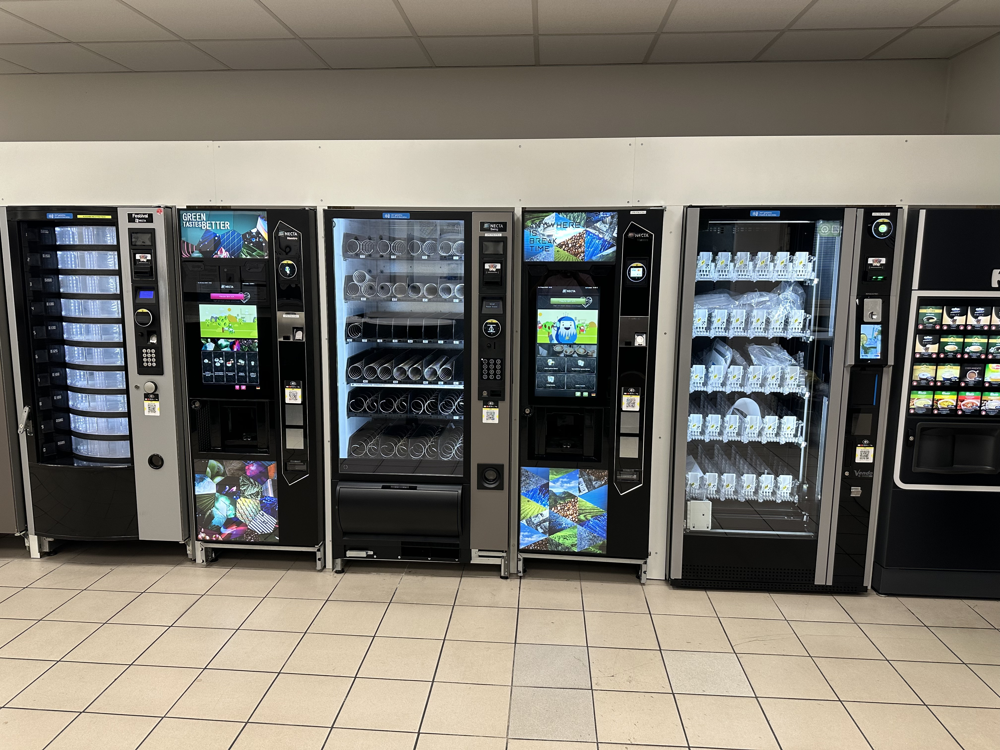
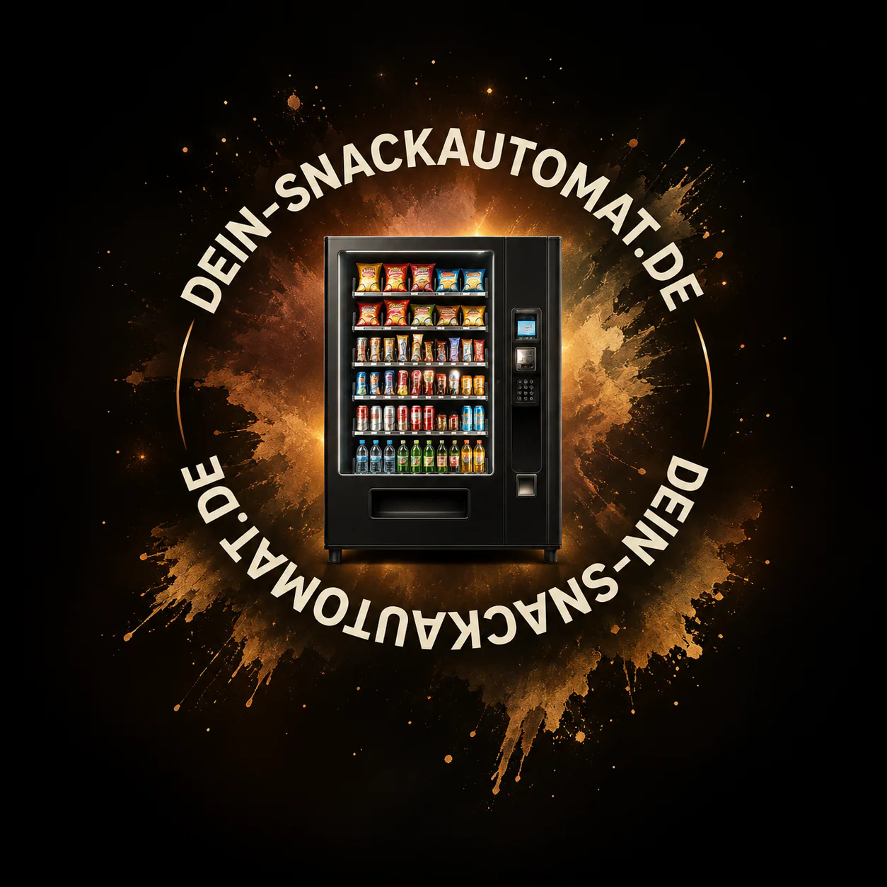
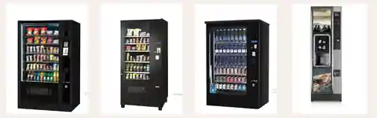
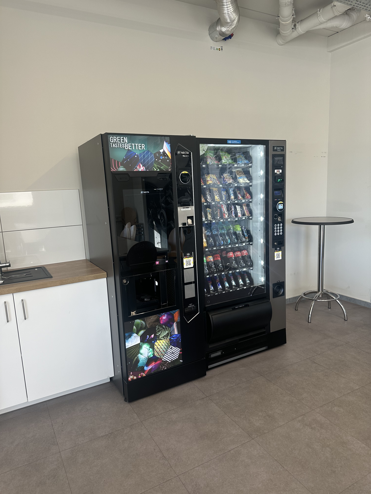
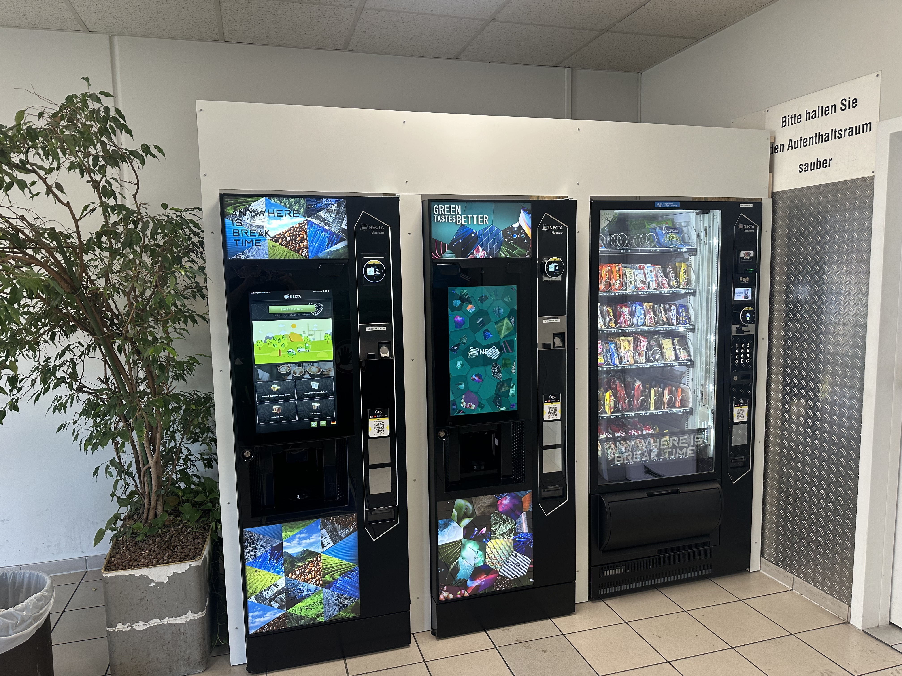

Automatenstandorte
Einblicke in Aufstellung und Nutzung.
Snack-, Getränke- und Kaffeeautomaten für Unternehmen und Gewerbetreibende. Vom passenden Gerät bis zur Planung deines 24/7-Konzepts.

Vier Einstiege statt unübersichtlicher Produktlisten. Du findest direkt den passenden nächsten Schritt.
Den passenden Automaten für Sortiment, Standort und Budget finden.
Automatenberater starten ↗ 02 · BetriebsverpflegungSnacks, kalte Getränke und Kaffee ohne klassische Kantinenstruktur.
Lösungen ansehen ↗ 03 · 2D-/3D-KonfiguratorGrundriss anlegen, Wände planen und Automaten in 2D und 3D positionieren.
Konfigurator öffnen ↗ 04 · Technische HilfeKühlung, Spiralen, Nayax oder Fehlercodes: passende Prüfschritte erhalten.
Fehlerdiagnose öffnen ↗
Indoor oder Outdoor, Snack oder Getränk, einzelne Maschine oder vollständiges Automatenkonzept: Die Auswahl orientiert sich an deinem tatsächlichen Bedarf.
Erstelle deinen Grundriss, zeichne Wände und platziere passende Automaten von SandenVendo und Necta im Raum. Der bestehende Konfigurator bleibt vollständig erhalten.
Beschreibe dein Fehlerbild in eigenen Worten. Die interaktive Diagnose ordnet Symptome ein und zeigt mögliche Ursachen, sichere Prüfschritte und passende Fachartikel.
Vorschau des Eingabefelds, keine echte Diagnose auf dieser Seite.
Temperaturmodus, Luftzirkulation oder Kühlsystem prüfen. Die genaue Diagnose erfolgt auf der Fachseite.
Standort, Zielgruppe, Sortimentswunsch und Budget erfassen.
Passende Modelle, Ausstattung und Zahlungsoptionen vergleichen.
Details abstimmen und die Umsetzung für deinen Standort planen.
Einblick in vorhandene Referenzbilder. Projektdetails werden nur veröffentlicht, wenn sie verifiziert sind.

Einblicke in Aufstellung und Nutzung.

Automaten passend zum Standort.

Planung für den jeweiligen Einsatz.
Nutze den Automatenberater oder frage direkt ein individuelles Angebot an.